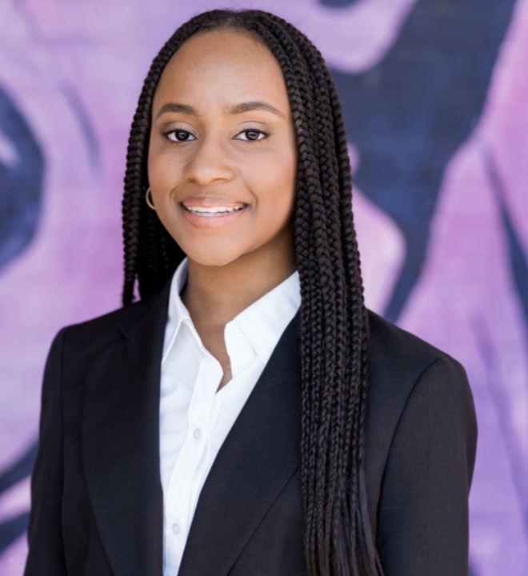

Participant of Girls For A Change's Girl Amassador Program
I was born in Richmond, Virginia and I live in Henrico County with my parents and my siblings. I have three older sisters, one older brother, and one younger brother. All of my older siblings have graduated from college and have moved on to start great careers like engineering, healthcare, and cyber security. My siblings motivate me to work hard so I can achieve just as much as they have achieved.
I am currently a tenth grader attending St. Catherine’s in Richmond, Virginia. My favorite and best subjects are English and History, so I plan to take AP classes in both of them during junior year. I maintain A’s and high B’s; however, math has been a struggle for me. I did not earn my desired grade last semester, so I realized that I needed to advocate for myself and work harder. Since reaching out to my parents and my math teacher, second semester has been better and I have all A's!
After graduating high school, I definitely want to go to college just like my parents and my older siblings have. I’m interested in applying to the University of Virginia, Virginia Commonwealth University, Virginia Union University, Virginia State University, Howard University, North Carolina State University, University of North Carolina at Chapel Hill, and Duke University. My mom graduated from Howard and two of my sisters graduated from UVA. I would like to pursue a college education, majoring in either psychology or fashion design. Mental health is a prominent issue right now and I believe majoring in psychology will help me understand more and learn what I can do to help. Since the age of seven, I would watch Doc McStuffins with dreams of becoming a pediatrician but that dream changed when I began middle school. I looked forward to putting together outfits for each school day and finding good jewelry and shoes to match. With the ever-changing fashion trends, I still put in effort to look my best nowadays.
After graduating from college, I plan to either pursue a career in the fashion industry or pursue a career to serve those in need of help with their mental health. Although I’m interested in both possible careers, I am not limiting myself to them because I have a hobby of writing music and I can view myself pursuing a career in the music industry and becoming influential and famous. I plan to live in a big city like New York or Los Angeles. No matter where my future takes me, I will never forget where I came from. I will continue reaching out to my community and helping those in need.
In addition to focusing on my studies, I am a member of the Give and Bake Club, the Fashion Club, the True Crime Club, and the track team. Additionally, I participate in Girls for a Change, an organization focused on helping black girls receive equal and life-changing opportunities for successful careers and futures. I also continue to volunteer in my community, helping those in need through organizations like Good Samaritan Ministries, Atlantic Outreach Group, and the Ronald McDonald House. This is my fourth year volunteering with these organizations. I took the first step needed to have a successful future when I completed a summer internship at Fit4Kids, an organization focused on promoting health and wellness to youth throughout the Greater Richmond area. Prior to starting the internship, I had a medium amount of experience with graphic design, using resources like PowerPoint and Google Slides in addition to using Canva a few times. Now I am more comfortable using Canva and I can take my designs to the next level using different effects and fonts. I enjoyed creating social media graphics for Fit4Kids because I knew that my hard work would impact youth and encourage them to be the change that they wanted to see in their schools and communities. After creating graphics for Wellness Wednesdays and working on other projects, I know a lot more about health, wellness and self-care than I did before my internship. My internship made me consider other career options like graphic design or web design; I am so grateful that I had the opportunity and I will always remember my experience.
Download Resume